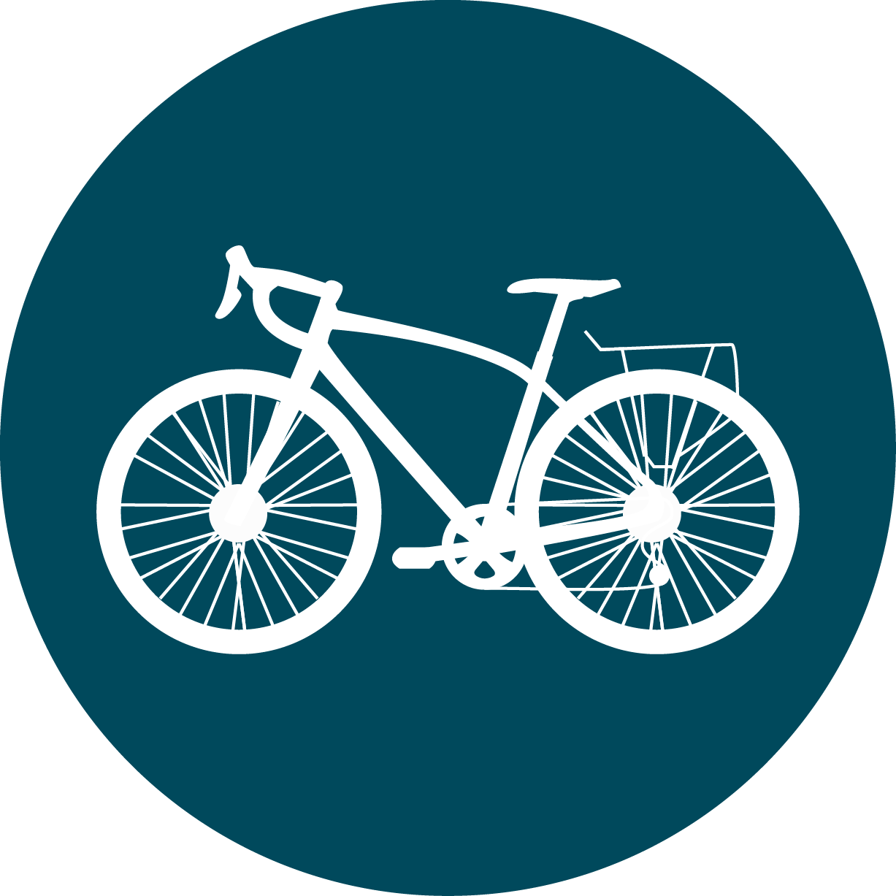

Time:
{{totalTimeBiked.days}} days, {{totalTimeBiked.hours}} hrs, {{totalTimeBiked.minutes}} mins

Distance:
{{totals.totalMilesBiked | number : '1.0-0'}} mi
Distance:
{{totals.totalMilesBiked | number : '1.0-0'}} mi
Ascent:
{{totals.totalAscent | number : '1.0-0'}} ft
{{(totals.totalAscent / 29029) | number: '1.1-2'}} Everest summits